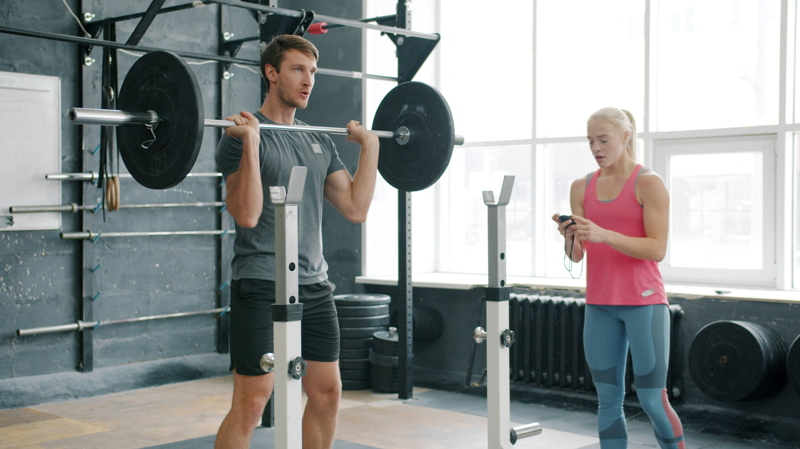

ブログ一覧
-

24時間ジムを効果的に使うトレーニング方法
仕事前や深夜など、時間帯におすすめのトレーニング内容を紹介。 忙しい人でも無理なく続けられるジム活用術を解説します。
-

筋トレ初心者が最初にやるべき基本メニュー
これから筋トレを始める方向けに、マシンの使い方や頻度の目安を分かりやすく紹介。 成果を出すポイントをまとめています。
-

トレーニング効果を高める食事の基本メニュー
筋トレと相性の良い食事の考え方やコンビニでも選びやすい食品を解説。 無理な食事制限をせず、継続しやすい方法を紹介します。
-

筋トレを継続するための習慣化をするコツ
三日坊主になりがちな筋トレを無理なく続けるための考え方やスジュール管理のポイントを紹介。 忙しい人でも続けられるよう工夫しています。
-

パーソナルトレーニングを受けるメリットは？
自己流のトレーニングとの違いやパーソナルトレーニングならではの効果を解説。 初心者にもおすすめできる理由を紹介します。
-
運動前後におすすめのストレッチ方法を紹介
ケガ予防や疲労回復に効果的なストレッチを運動前後に分けて紹介。 短時間でできるメニューを中心に解説します。